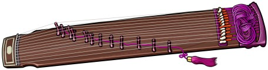
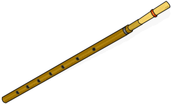

.png)
Instrumentos Tradicionales Coreanos
ITC
El proyecto ITC busca la difusión los instrumentos tradicionales más representativos de Corea, ya que sus sonidos e influencia los convierten en un tesoro cultural. Los instrumentos tradicionales de la Península coreana empiezan a desarrollarse a partir del siglo IV, algunos de ellos por intercambios culturales con los países vecinos, mientras que otros evolucionaron de manera independiente y son considerados nativos de la Península. Se conocen aproximandamente sesenta tipos de instrumentos, pero solo veinte han sobrevivido el trascurrir del tiempo. Estos instrumentos fueron un medio de expresión para los agricultores, en la música folclórica; pero pronto se volvieron indispensables en los ritos religiosos y artes escénicas.
Instrumentos tradicionales coreanos
-
Buk
Tambor hecho de cuero y madera que se toca con dos palos. Este tiene más de veinte versiones en distintos tamaños. En muchas ocasiones lo podrán ver como acompañante del Pansori, presentación musical en donde se cantan historias.
-
Gayageum
Cítara de Gaya, tiene doce cuerdas y un puente móvil llamado anjok, mide 1,60 por 30 cm y se toca con ambas manos. Fue creada en el siglo VI, durante Confederación de Gaya, y es uno de los instrumentos tradicionales más conocidos.
-
Geomungo

Cítara de Goguryeo, ya que se origina entre los años 37A.C. y 668. Este instrumento mide 160 por 23 cm. Aunque tradicionalmente se compone de seis cuerdas de seda y 16 trastes, hay adaptaciones con más cuerdas. Se toca con una vara de bambú llamada suldae que se lleva en la mano derecha, con la cual se pulsan las cuerdas, mientras que con la mano izquierda se controla la vibración.
-
Ajaeng
Cítara de siete cuerdas y siete puentes, sus cuerdas se tocan con un arco de madera. Este instrumento se origina durante el reino de Goryeo (918-1392), y tradicionalmente se usaba para interpretar música cortesana.
-
Hyang Bipa

Laúd de cinco cuerdas, es un instrumento que tiene forma de lágrima. Por tener una técnica de interpretación muy compleja ya no se ejecuta, y hoy se encuentra solo en los museos.
-
Hyang Piri
Flauta de doble lengüeta. Es una estructura de bambú con ocho orificios, mide 27 cm. Se dice que se originó en Asia central y llegó a Corea a través de la Ruta de la Seda. Por su versatilidad, es utlizada tanto para interpretar música cortesana como música popular.
-
Janggo
Tambor con forma de reloj de arena, hecho de cuero y madera. Este fue introducido a Corea desde la India durante el reino de Silla (57 A.C.-935). Sus dos extremos producen sonidos diferentes al ser golpeado, por lo que puede interpretarse ya sea colocándolo en el suelo, o colgándolo sobre los hombros.